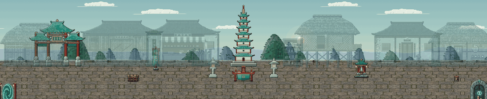
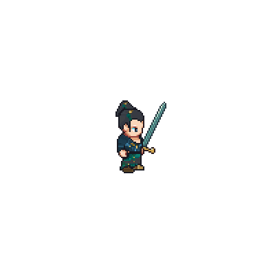
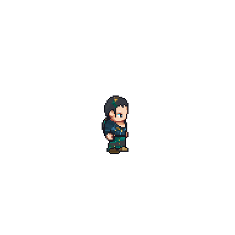

Your Sect
Courtyard
Expeditions
Territory
Reed Lantern Sect · the Hidden Vale

Beast Pavilion4
Treasury · to raise
Mission Hall2
Meditation Pavilion · to raise
Guest House2
Alchemy Hall3
Forge3
Sect Hall · Lv 1
Library5
Gate


Fei
Jun
3 ask to join
Sect level 1 · prestige 60
Lv 2 at 696: Guest House, Mission Hall
Lv 3 at 1,445: Alchemy Hall, Forge
Lv 4 at 2,425: the Back Mountain
+20 for each building raised
Treasury
not raised · sect level 1
Your storage chest holds 40. The Treasury adds 20 spaces a level.
Copper Ore: none in the bag, 49 in storage
Build
Open storage
Disciples
2 of 2 rooms
Fei · Lv 3 · Steady Hands · Sword Dao
Strength 4 · Spirit 5 · Craft 3
Jun · Lv 1 · Fast Learner
Strength 2 · Spirit 2 · Craft 5
At the gate: Xiu, Tao, Lan
Recruit
Full: raise the Guest House
BEYOND THE WALLS
Four more buildings, from sect level 4 to 8, have no place in the courtyard yet